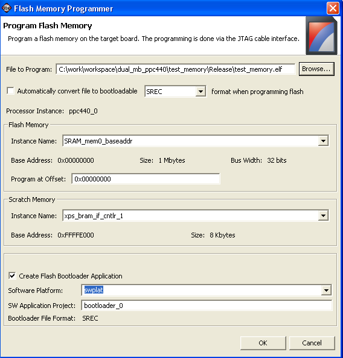

Programming parallel Flash memory
To program the
parallel Flash memory:
-
Select Tools > Program Flash Memory.
- In the Select Processor dialog box that opens, select the processor instance to which the parallel
Flash memory is connected.
-
In the File to Program field, specify the executable file, bitstream, or data file to
write to Flash.
-
If you are programming an executable file (in ELF format) and would like
to use a bootloader to boot the processor after reset, click to select the
Automatically convert file to bootable SREC format when programming
Flash check box.
-
Select the Flash memory using the Instance
Name drop-down list in the Flash Memory area.
-
If you want the file to be written at an offset in the Flash memory,
specify the offset using the Program at
Offset field.
-
Specify any memory that will be used by the Flash programmer as a scratch
memory using the Instance Name drop-down list in the Scratch Memory area.
Note: The current contents
of this memory will be overwritten.
-
If you want to create a bootloader for the executable program in the
Flash memory, click to select the Create Flash Bootloader Application
check box. Specify the software platform to use and software
application project name for the bootloader
application.
- Click OK.
SDK programs the Flash with the
file. If you opted to create a bootloader application, a software
application project is created in the workspace with the source and
header files.


Programming parallel
Flash

Configuring the JTAG
settings
Configuring the
FPGA

Flash Memory Programmer dialog box
Copyright © 1995-2009 Xilinx, Inc. All rights reserved.